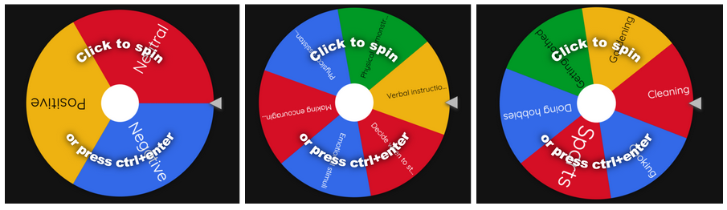
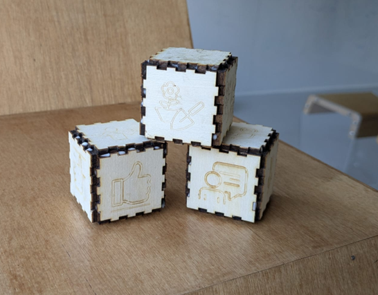
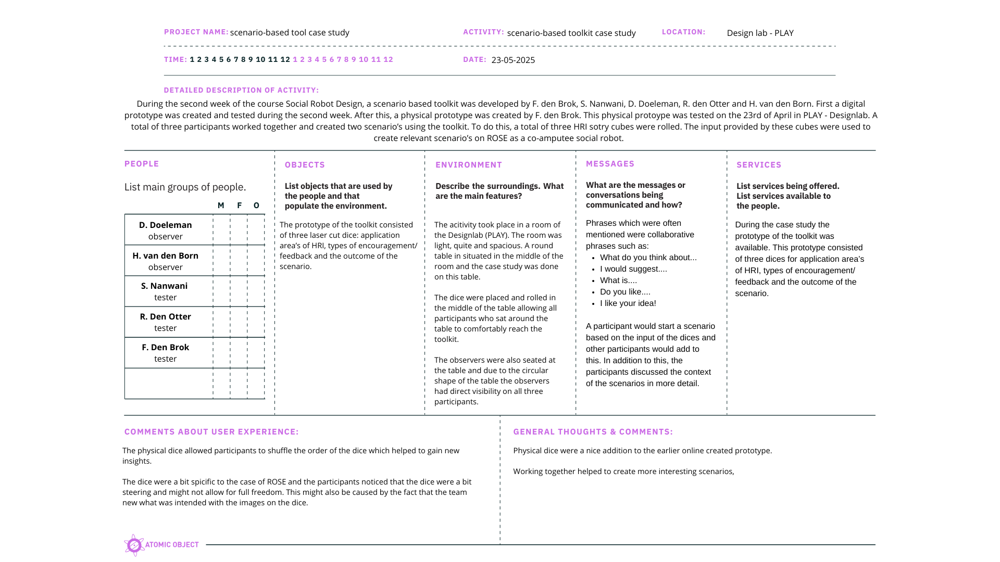
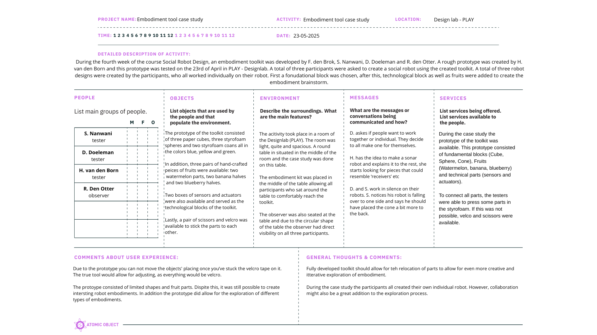
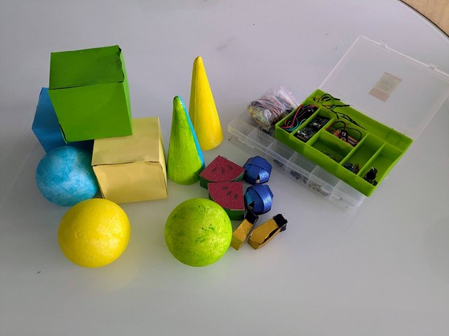
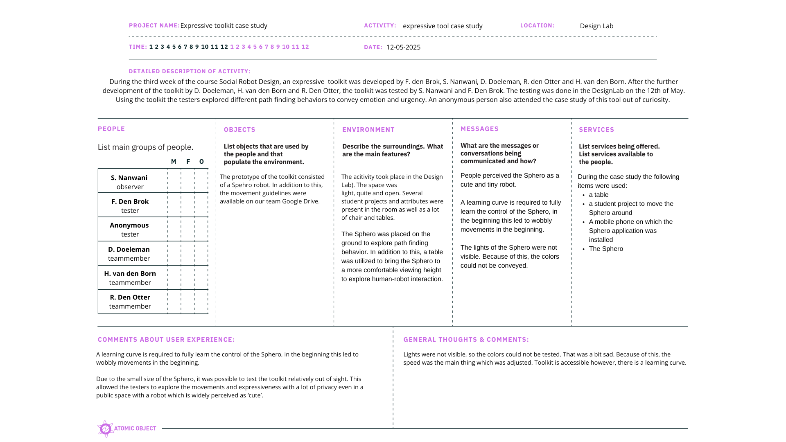
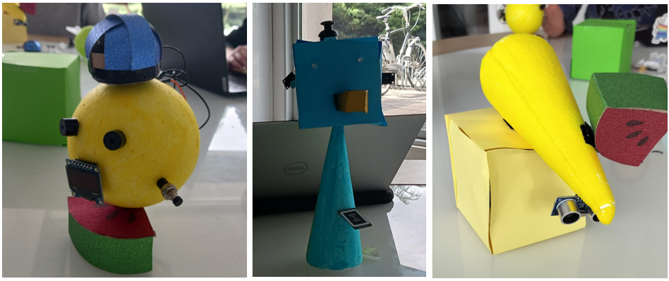

Week 5
During this week’s project meeting, a case study was conducted to test the created toolkits. During the past few weeks, the prototypes created have already been tested. However, where possible, a more advanced prototype was created and used during the case study of this week.
Toolkit 1: A scenario-based toolkit
The first toolkit that was created for this course was a scenario based toolkit.

Online prototype scenario-based tool
However, to test the toolkit in a physical and collaborative setting, three physical dice were created by F. den Brok:

HRI dices prototype
Case study
A case study was conducted in Design lab. During this case study, my group and I 2 tested this toolkit by rolling the dice and creating scenarios:
- Positive, emotional feedback/talking, arts/hobbies: Misses Johnson knitting in the common room of the care house; her motor skills are not what they used to be, and she made some mistakes. In frustration, she tried to take down her work when ROSE noticed. ROSE asks her: Why did you put it down? You were doing great! We can work it out together. On her screen, she shows a possible fix, and they work it out together.
- Working together, gardening, negative outcome: Bob and ROSE are working in the garden together. To finish the work faster, Bob provides ROSE with specific tasks, and they split up the work. ROSE goes across the field instead of going to the pavement on the freshly mowed lawn and runs over potatoes starting to grow. Bob gets angry and frustrated. Bob calls ROSE, but ROSE does not receive the message and continues on with her task. Bob is frustrated and disconnects ROSE.
Below, a filled-in POEMS framework can be seen:

Insights after testing
After testing the toolkit, we concluded that the dice are a nice tool to explore scenarios'. They provide some guidance; however, the open-ended character of the dice allows a designer to create out-of-the-box scenarios. Especially the dice about the outcomes of the scenario's allow for a nice exploration. I found it really nice to be forced to also think about possible negative and neutral outcomes of the scenario's. The scenario of ROSE and Bob is a good example of this. As a designer, it reminds me to also think about the possibility of ROSE not hearing or understanding any communication effort. It allows me to rethink what the minimum range of the microphones of the robot are and if a robot should be able to hear everything. This does show that storytelling can take on an important role in a design process, and therefore I do support the quote of Thomas Erickson shared during the lecture of week 2:
Quote
Design is a distributed social process, and, as a result, communication plays a vital role. 3
The link to HRI of the digital is a bit too specific, which leads to less creative freedom. To mitigate this, story cubes with only symbols were created. By doing this, the link to HRI became a bit more implicit instead of explicit; however, it did allow for more conversation. In addition to this, we discussed if the physical story cubes were more beneficial over the digital prototype. We found that the physical story cubes provide a sense of control since you are able to shuffle the order of the dice, and you are able to pass the dice over to another team member.
Toolkit 2: An expressive toolkit
The expressive toolkit was not iterated upon this week since it was already tested in detail, and it was not possible to gain access to a Sphero robot in time. Below, a video can be found that was recorded during the third week of this course.
After a reflective conversation with the entire group, it was still possible to fill in the POEMS framework.

POEMS framework 1 expressive toolkit case study
Insights after discussion
During the discussion we as a group had about our expressive toolkit, we discussed the outcome of our test. During the test, a Sphero robot was used, and this was a good choice since the lack of humanized features on the tiny robot ball allowed us to only review the movement and expression without being distracted. The Sphero was, however, a bit hard to control, and the colors of the lights were not really visible. Despite this, the toolkit provided us a good foundation to test the expression of urgency through movement. It was concluded by the group that especially high urgency and a low level of urgency (roaming behavior) were expressible via movement patterns. The level of some urgency was a bit harder to convey, since it relied on a lot of nuances.
The toolkit was created based on the guidelines for social robot path finding by Francis et al. 4. Because of this, it is no surprise that it was possible to recognize certain behaviors of the Sphero robot.
Toolkit 3: An embodiment toolkit
After a digital prototype, a paper prototype was created by me to test the embodiment toolkit. Three of the participants were tasked with creating a robot embodiment that suited their wants and needs. The social guidelines (Safety, Comfort, Legibility, Politeness, Social Competence, Understanding other agents, proactivity, and responding appropriately) also have similarities with the work of Cyntia Breazeal on the first social Robot: Kismet 5. In addition to this, the creation of an expressive toolkit through movement showed resemblance with the work of Laban 6 in which the space, weight, and flow/time of a motion could be used to convey emotions.

Embodiment prototype

POEMS framework 1 embodiment toolkit case study
The following three robot embodiments were created (from left to right):
- The robot should be a positive and approachable robot that finds its way through sonar. To achieve this, two speakers were placed on the fundamental block and represented the eyes of the robot. In addition, a blueberry representing the receiver was added to the robot.
- The blue color was used to evoke calm and negative, sad emotions since this robot is a robot to talk to when you are sad, and therefore it needs to be empathic and show it feels you. Ears, since it can hear and make sounds (beeps). I also gave it a nose and eyes, since it is a social robot that is made for interaction with humans. The joystick on the head can be used to provide input to the robot and set it to different modes, such as listening, cheering up, waking up, and sleeping.
- The robot is meant to represent a sort of pet buddy who helps with tasks and guiding around the house choirs. The yellow color is meant to represent a calm and happy robot that I'd always be there to support. The top cone can rotate to help detect where to clean up, the watermelon can tilt up and down to indicate where to go, and the tail in the back (banana) can jiggle to indicate trouble has been found.

Results of the embodiment case study
Insights after testing
After the testing, we concluded that the color coding of the robot is a bit simplified, since colors can be used for way more than only conveying an emotion. A total of three different and interesting embodiments were created. A bigger variety of fundamental blocks, or moldable fundamental blocks, would provide a more realistic exploration. The velcro allowed for full exploration of the physical body of the robot, and the technical components were varied and allowed for the exploration of functionalities.
The combination of fundamental blocks and technical blocks allowed us to explore not only the technical and robotic capabilities of a robot, but also the social aspects of the design. During the reflection of week 4 user-centered design methods were discussed. These methodologies do not only look at what a robot should do, but also how a robot should do things or how a robot should be perceived. By exploring the embodiment of a robot via shapes and fruits, the look and feel of a robot can be altered to match, or purposefully mismatch the intended use of a robot. It also allows a designer to explore the balance between form and function.
-
‘POEMS – Research Tool - Nova’. Accessed: May 25th 2025. [Online]. Available at: https://novatools.org/poems-research-tool/ ↩↩↩↩
-
F. den Brok, S. Nanwani, D. Doeleman, R. den Otter, H. van den Born ↩
-
Erickson, T. (1996). Design as storytelling. interactions, 3(4), 30-35.http://doi.org/10.1145/234813.234817 ↩
-
A. Francis e.a., ‘Principles and Guidelines for Evaluating Social Robot Navigation Algorithms’, J. Hum.-Robot Interact., vol. 14, nr. 2, pp. 1-65, jun. 2025, doi: 10.1145/3700599. ↩
-
C. L. (Cynthia L. Breazeal, ‘Sociable machines : expressive social exchange between humans and robots’, Thesis, Massachusetts Institute of Technology, 2000. Geraadpleegd: 3 juli 2025. [Online]. Beschikbaar op: https://dspace.mit.edu/handle/1721.1/9303 ↩
-
‘Laban movement analysis’, Wikipedia. September 27th 2024. Accessed May 14th [Online]. Available at: https://en.wikipedia.org/w/index.php?title=Laban_movement_analysis&oldid=1248108012 ↩